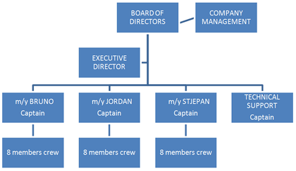

To earn customer loyalty by offering product, Adriatic pelagic fish prepared in a traditional way with environmental care in mind.
To preserve quality and unique offering of traditional recipes for preparing pelagic fish.
To use our own catch for our own production, for fastidious customer.
To use developed advantages in human and financial resources for stepping ahead in fishing and processing. To open new market space by creating prerequisits for partnership to potential investors.
Fishing is traditional and existential activity of our coastal population. Zadar county fishing is mainly represented in fishing (and preparing) small pelagic fish and tuna farming. Zadar county fishing fleet has approximately 35% share in Croatian national catch. Most important species are pilchard and anchovy, which are basis for processing industry and main food in tuna farming. Croatian fleet has around 60 commercial companies.
It is important to emphasize tuna farming as it is most active part of mariculture, as it relates to a large number of activities and encourages development of fishing industry. Tuna farming uses up to 55% of small pelagic fish cath, and the rest of needed food is imported.
Small pelagic fish is caught almost all year, closed season is only between 15th of December and 15th of January.
Croatia has seven coastal counties with 209 commercial fishing boats 15-40 m long, mostly fishing for small pelagic fish. Zadar county has 95 fishing boats (45%). Dalmacija ribolov has part of 10.7% share in category larger than 24 m.

LEVERAGE | POWER |
| professionally qualified | verified logisitcs |
| bussiness organized | own finantial resources |
| experienced | local community support |
| known to bussiness public | known development strategy |
three owners — one goal | |